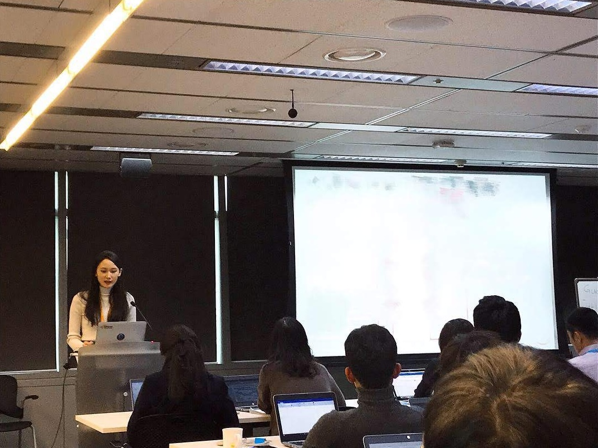

Before I studied strategy as a scholar, I practiced it. I began my career on the business development team at Amazon Web Services in Korea and then worked as a strategy consultant at Kearney. Across those roles, my job was to enter unfamiliar industries, structure ambiguous problems, and turn analysis into recommendations that decision-makers could act on. The frameworks I now teach were the tools I used every day to develop strategies and communicate recommendations. That experience defines my goal as an educator: to help students bridge the gap between strategy theory and managerial practice.
Teaching Range
My professional and research background prepares me to teach across a range of courses, from strategy and entrepreneurship to consulting-related courses and international business, and I would welcome the opportunity to teach in each.
Strategy. Strategy is my core course. I have taught Strategic Management (SGMT 3000) as sole instructor in a case-based format, and its content, from industry and competitive analysis to strategic change, maps directly onto my consulting experience and my research. I am comfortable teaching it at the undergraduate and MBA levels and am well versed in the case method as the basis for class discussion.
Entrepreneurship and Innovation. My work has involved firms at critical points of growth, transition, and technological change: Gong Cha as it scaled beyond Korea; the fintech company ATON as it prepared for an IPO, where I developed investor relations materials; and, at AWS, clients across diverse industries rethinking their businesses around cloud and big data technologies. These experiences prepare me to teach entrepreneurship and innovation, from making strategic choices under resource constraints and uncertainty to evaluating how emerging technologies can reshape businesses and create new opportunities.
Management consulting. My time at Kearney taught me how to structure and deliver strategic plans, and at Schulich I brought that experience into my strategy section, integrating slide design, structured report writing, and industry analysis alongside the course content. I am well positioned to teach or supervise student consulting projects, where students learn strategy by producing work a real organization can use. This is also a form of teaching I have practiced since before graduate school. For example, as a session leader of the Structuring & Debate Consulting Club at Yonsei, I led weekly strategy case sessions, wrote a case-structuring guide for systematic problem solving, and initiated and coordinated projects with a venture and a major Korean bank.
International business. My professional experience covers both directions of cross-border strategy: global firms entering Korea and Korean firms going abroad. At Amazon Web Services, I worked on market validation and launch prioritization for cloud services entering the Korean market. At Kearney, I advised a global luxury-goods brand on its Korean business, and on Gong Cha’s global strategy team, I supported the Korean bubble tea brand’s international expansion. These projects dealt directly with the questions at the heart of an international management course: how firms decide where and how to enter foreign markets, how they adapt offerings to local consumers, and how they manage the tension between global scale and local responsiveness.
